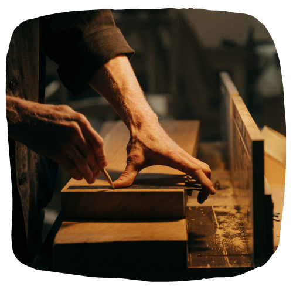
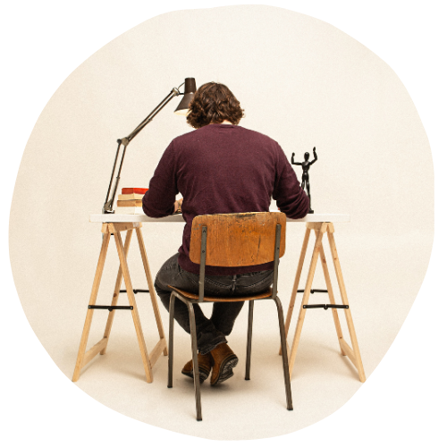
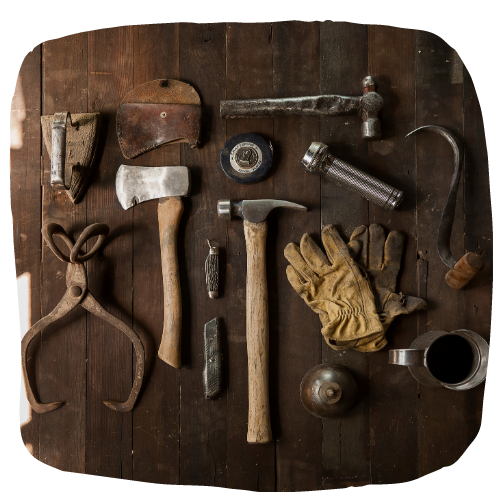
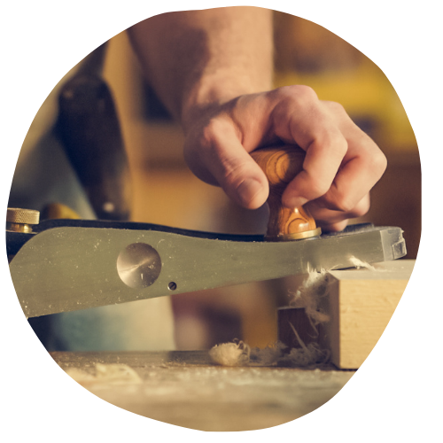
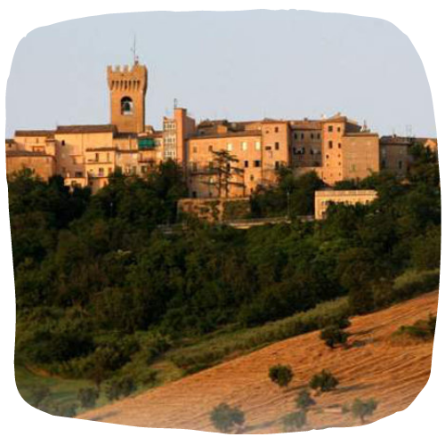
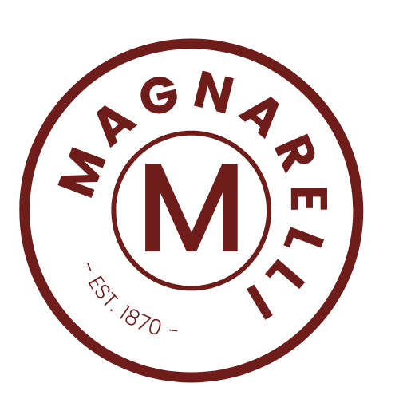

La falegnameria Magnarelli nasce sulle dolci colline di Recanati, in provincia di Macerata, negli anni '50, vantando
un'esperienza cinquantennale nel mondo dell'artigianato del legno.
Il suo fondatore, Saverio Magnarelli, ha dato vita a questa bottega artigianale con la stessa passione e
dedizione che a tutt'oggi contraddistingue il lavoro di suo nipote Sandro.
"La storia della nostra bottega inizia due generazioni fa, passando dal lavoro delle mani di mio nonno Saverio,
a quelle di mio padre Filippo, alle mie. Sono praticamente cresciuto in bottega, dove mio papà mi ha insegnato l'arte di usare le mani per costruire qualcosa di bello, solido e che duri nel tempo."
DI MANO IN MANO...
"Ogni lavoro che realizzo, lo faccio ancora con la stessa minuzia e attenzione che mi permettono di vedere la soddisfazione
negli occhi dei nostri clienti.
Ora sto insegnando questo mestiere a mio figlio Iulian, in modo da preservare quelle tecniche artigianali che contraddistinguono
il nostro territoro marchigiano ed il Made in Italy, di cui andiamo fieri."


IULIAN, LA NUOVA GENERAZIONE
A soli 20 anni Iulian si mette in gioco ed inizia ad andare in bottega, tutti i giorni, per apprendere il mestiere.
E' così che prende in mano le redini dell’azienda e - con il suo occhio attento per il design e la sua creatività, la rilancia,
pur mantenendo intatte le caratteristiche più preziose del puro Made in Italy: qualità, attenzione per il dettaglio, lavorazione rigorosamente fatta a mano.
Selezione dei migliori materiali, massima cura dei dettagli e delle rifiniture, passione e onestà.
Questi sono gli ingredienti che contraddistinguono la bottega artigianale e che permettono la realizzazione di una vasta gamma di mobili per interni.
Tra le più richieste, spiccano cucine componibili, camere e camerette, armadi e telai con ante per vani a muro.
Tutto rigorosamente fatto a mano e personalizzabile.


IL VERO FATTO A MANO
"Ogni prodotto che creiamo, lo disegnamo assieme al cliente.
Tutti i nostri prodotti sono pezzi unici e sono fatti per durare nel tempo.
Facciamo anche riparazioni e manutenzioni di porte e finestre, perchè ci piace prenderci cura
degli oggetti - anche se non sono stati creati da noi"
Hai un tuo progetto d'interni che vorresti realizzare?
"Il volto più vero delle Marche, anche se il meno appariscente, è quello di una regione di laboriosa e virile solitudine, abitata da gente avvezza a fare i conti con se stessa, a non ammettere niente di grande, niente di straordinario in nessun fatto e in nessun uomo.
Un popolo, dunque, che la pratica quotidiana del mare e dei campi ha reso taciturno, appartato, schivo alle facili aperture, e tuttavia più incline alla malinconia che alla tristezza, più all'interrogazione che all'angoscia."
Carlo Antognini, 1971

MOBILI SU MISURA
CUCINE componibili
TAVOLI personalizzati
ARMADI fatti a mano
COMODINI artigianali
CAMERE su misura

CONTATTACI PER RICHIEDERE UN PREVENTIVO
State cercando dei mobili e degli arredamenti su misura a Recanati o nelle Marche?
Le porte della bottega Magnarelli sono pronte ad accogliervi.